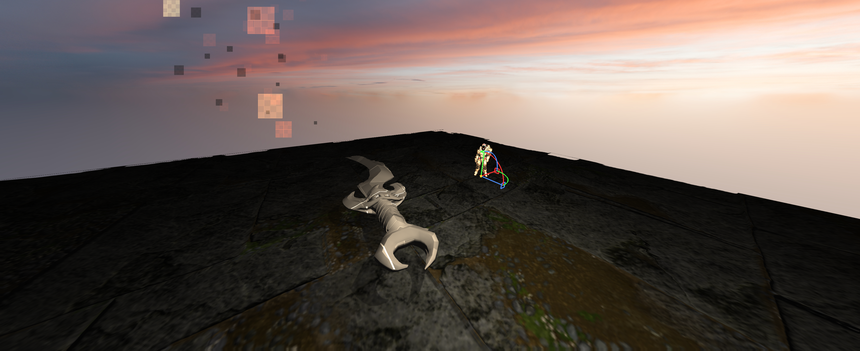
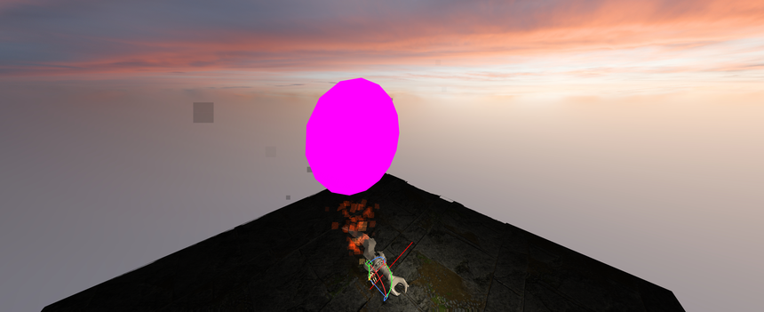
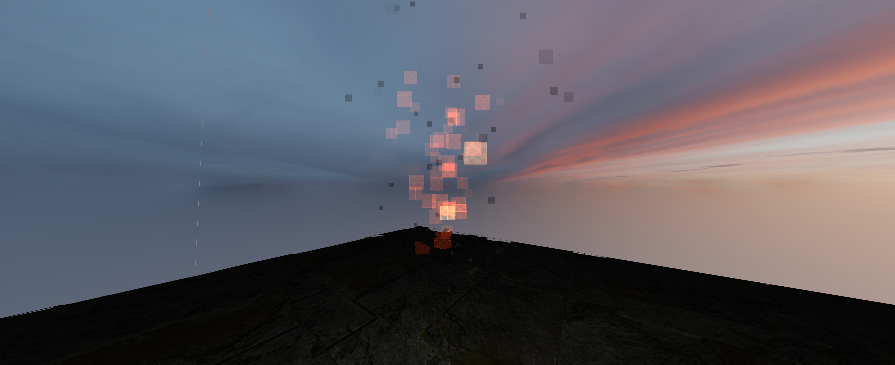
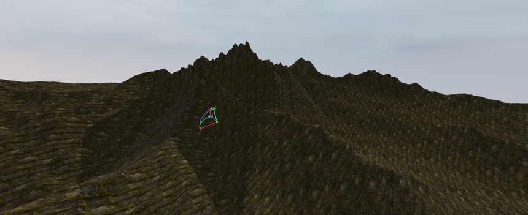
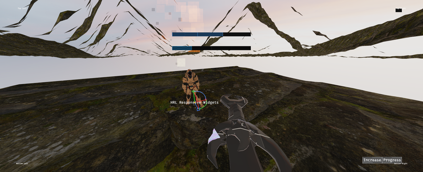
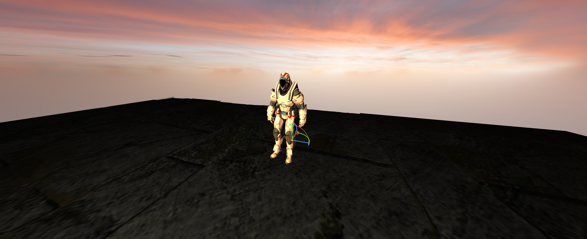

Horizon Rendering Library
HRL is a C/C++ library for 2D and 3D rendering. It puts one API on top of OpenGL, Vulkan, Direct3D, Metal and other graphics backends. Version 26.6, Apache License 2.0.
Download · Documentation · Source on GitHub

About
HRL sits on top of several graphics backends behind a unified API. It is built on one principle: nothing exists until you create it, and everything you create must be explicitly destroyed. No hidden defaults, no garbage collection: you keep full control over GPU memory and render state.
- Multi-backend. OpenGL 3.3/4.5, Vulkan, Direct3D 11/12, Metal, NVN and GNM behind the same functions.
- Explicit. Every
HRL_Create*returns anHRL_id; check it againstHRL_INVALID_ID. - Complete. Meshes, sprites, skeletal meshes, PBR materials, lights, cameras, viewports, VFX, widgets and debug drawing.
- Open source. Apache License 2.0.
Showcase





Download
| Item | What it is |
|---|---|
| main.zip | Source code of the main branch |
| Releases | Tagged versions, when published |
| Repository | Browse the code, open issues |
Or clone it with Git:
git clone https://github.com/oscar-soirey/Horizon-Rendering-Library.git
The project uses CMake (CMakeLists.txt at the root). Windows helper scripts such as build.bat and generate-cmake-project.bat are included.
Examples
A textured 3D mesh in a window, with GLFW and OpenGL 4.5:
// 1. Initialize
HRL_Init(HRL_OpenGL45);
HRL_InitContext(1280, 720, glfwGetProcAddress);
// 2. Scene, camera, viewport
HRL_id scene = HRL_CreateScene(HRL_True);
HRL_id camera = HRL_CreateCamera(scene, HRL_Perspective);
HRL_id viewport = HRL_CreateViewport(scene, camera, 0.f, 0.f, 1.f, 1.f);
HRL_SetCameraPerspectiveFov(camera, 60.f);
HRL_SetCameraPosition(camera, 0.f, 0.f, -5.f);
// 3. Shader, material, texture
HRL_id shader = HRL_CreateShader(vert_src, vert_len, frag_src, frag_len);
HRL_id material = HRL_CreateMaterial(shader);
HRL_id texture = HRL_CreateTexture(png_data, png_size);
HRL_MaterialSetTexture(material, HRL_T_ALBEDO, texture);
// 4. Mesh
HRL_id mesh = HRL_CreateMeshFromFile(scene, HRL_3D_Mesh, obj_data, obj_size);
HRL_SetMeshMaterial(mesh, material);
// 5. Render loop
while (!glfwWindowShouldClose(window)) {
HRL_BeginFrame();
HRL_EndFrame();
glfwSwapBuffers(window);
glfwPollEvents();
}
// 6. Cleanup
HRL_Shutdown();
More complete programs are in the example folder of the repository. The full function list is in the documentation.
Credits
Structure, OpenGL & Vulkan backend: Oscar Soirey (oscarsoirey.contact@gmail.com)
DirectX 11 backend: @CodeBYMehdi